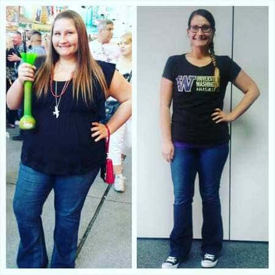
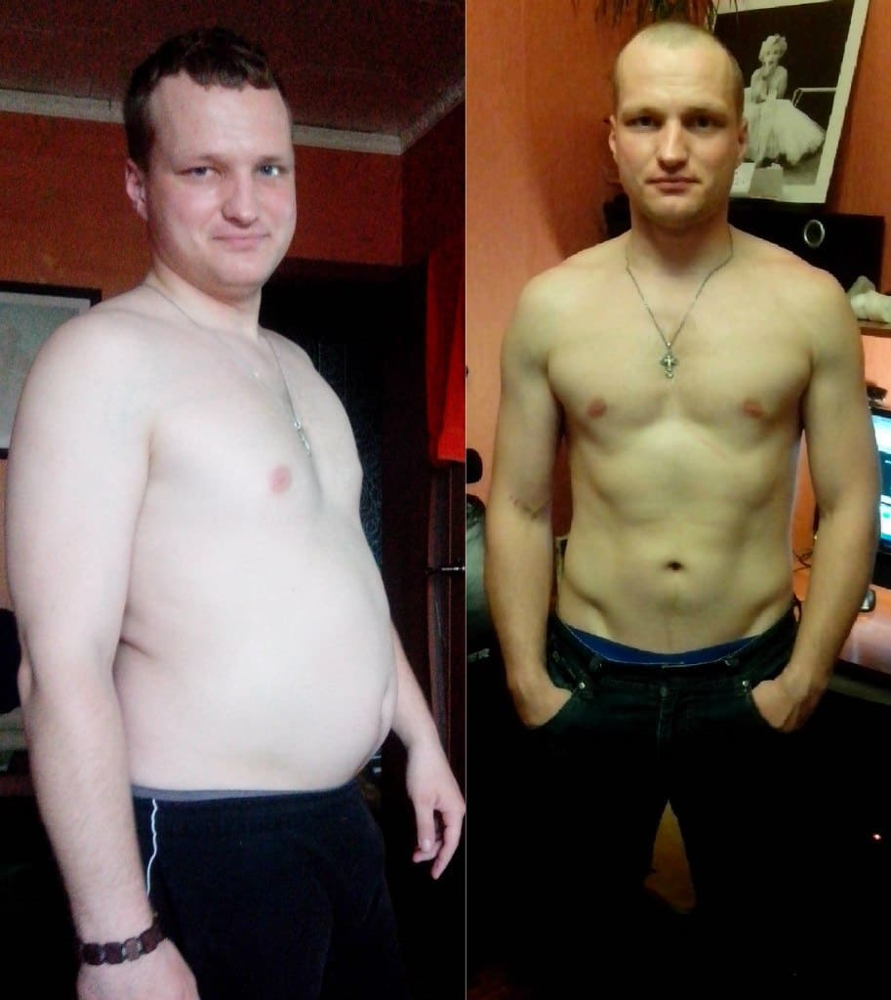
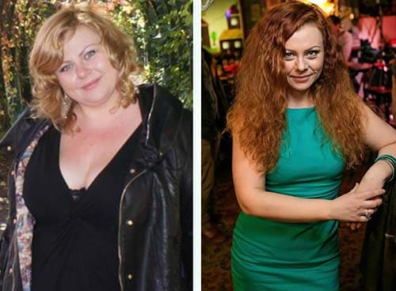
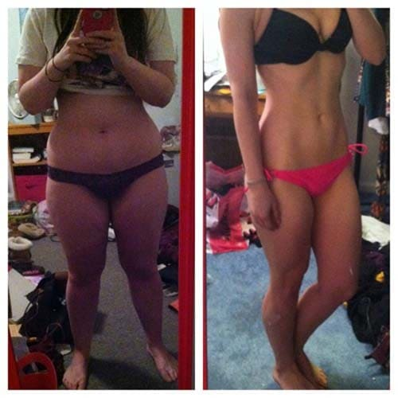

"Nutriționiștii sunt șocați! Secretul pentru pierderea rapidă în greutate a fost dezvăluit” De la obezitate la anorexie – un pas!
Spune medicul din cea mai înaltă clasă medicală, prof. Julius Špičák.
Dietele, exercițiile, pastilele și liposucția sunt astăzi, metodele principale în
lupta
împotriva greutății excesive, însă judecând după faptul că numărul persoanelor obeze
continuă să crească, niciuna dintre ele nu este cu adevărat masivă și eficientă.
Totul s-a schimbat când a apărut - un
preparat care
stimulează pierderea naturală în greutate.
Prof. Julius Špičák.
Profesor de nutriție umană, președinte al Societății Română de nutriție,
Departamentul de Știință Alimentară și Nutriție Umană, Universitatea Agricolă
din
Banat.
Experiență profesională – 25 de ani.
Ce este ?
De obicei, organismal are nevoie de 7 până la 14 zile pentru a începe starea de cetoză. Doar o lingură de va reduce această perioadă la 40-50 minute, în care va începe procesul de conversie a grăsimilor în energie și reducerea grăsimii stocate. Trebuie doar să țineți în fiecare zi ȘI VEȚI PIERDE PÂNĂ LA 15 – 30 KG DIN GREUTATEA DUMNEAVOASTRĂ ÎNTR-O LUNĂ. Pasul 1 Cetoza va asigura că grăsimile tari vor fi arse, în timp ce vă mențineți masa musculară. Reducerea aportului de carbohidrați va garanta stabilizarea greutății și va preveni întoarcerea kilogramelor deja pierdute. Pasul 2 începe procesul de cetoză: accelerează metabolismul, reduce pofta de mâncare și atacă imediat grăsimile!
- un complex pentru pierderea în greutate, care vă permite să slăbiți rapid și să nu vă îngrășați din nou.S-a dovedit clinic că accelerează metabolismul, restabilește sistemul endocrin, stimulează regenerarea țesuturilor și potolește senzația de foame. Produsul este complet natural și este un stimulent activ al proceselor naturale din corpul uman. Deoarece arderea grăsimilor se produce din cauza metabolismului rapid, nu este necesară o dietă strictă. O dietă echilibrată este suficientă pentru a menține metabolismul. Activitatea fizică intensă în acest caz nu este necesară. Într-un caz extrem, exercițiul simplu este suficient.
Principalele
caracteristici ale :
- Ardere rapidă
- Inhibarea poftei
de
mâncare
- Normalizarea fondului hormonal
- Întinerire și curățare a
corpului
-
Efect tonic datorat arderii grăsimilor
Datorită metabolismului rapid, la persoanele care țin accelerează arderea grăsimilor cu 48%. este eficientă chiar și în cazurile în care excesul de greutate este cauzat de tulburări hormonale. Dacă ai tendința de a fi supraponderal - acest produs este pentru tine!
În România, a apărut recent, dar a fost deja recunoscut ca un produs preferat al antrenorilor și culturistilor pentru a slăbi rapid și pentru a menține un procent scăzut de grăsime în organism.
Rezultate după administrarea
Rezultate după administrarea
Rezultate după administrarea
Rezultate după administrarea
Comentariile cercetătorilor:
Harris Dimosthenopoulos
Dietetician clinic și biolog,
M.Med.Sci.
S.R.D.
Cel mai important lucru este pierderea în greutate – nu trebuie să vă răniți corpul. Din păcate, cele mai populare metode de slăbire nu se pot „lăuda” cu acest lucru. Nu puteți rămâne la dietă tot timpul și nu toată lumea își poate permite.Dacă nu-și ating obiectivul, oamenii apelează la pastile, iar majoritatea dintre acestea suprimă doar corpul, provocând tulburări ale hormonilor, ale sistemului imunitar și ale ficatului. Pierderea în greutate ar trebui să fie naturală și să nu întrerupă procesele interne din corp. Astăzi, este un preparat unic care răspunde acestor probleme. accelerează metabolismul grăsimilor cu ajutorul liposolubilor naturale, redându-vă echilibrul hormonal.
Cercetare
Rezultatele testelor de laborator ale la Ministerul Sănătății:
Un grup de persoane supraponderale (100 de persoane) au ținut dieta KETO zilnic, timp de o lună, fără a-și schimba dieta obișnuită. În timpul studiului, s-au obținut următoarele rezultate:
1.Pierderea
țesutului adipos de la 12 la 25 kg
- Când slăbești 25 kg – 81%
- Când
slăbești
12 kg – 100%
* În acest
caz, pierderea este înțeleasă ca o ameliorare de la țesutul adipos și absența
acesteia timp de 1 lună.
2.Îmbunătățirea semnificativă a metabolismului.
3.Creșterea impulsului
și
a activității fizice.
4.Îmbunătățirea funcției ficatului și a sistemului
endocrin.
S-a dovedit că are un efect puternic asupra
accelerării metabolismului și arderii țesutului adipos. Este potrivită
pentru
utilizare de către persoanele supraponderale, persoanele cu tulburări metabolice și
persoane diabetic.
Bună! Sunt în proces de implementare a . Într-o săptămână am slăbit 5 kilograme. La vârsta mea nu este ușor să obții o astfel de pierdere. Continu să slăbesc cu mare bucurie! =))
Sunt foarte bucuros că am găsit această pagină. Cu siguranță voi încerca această dietă.

Am primit pachetul ieri și astăzi încep o viață nouă! Destul cu renunțarea! Să înceapă pierderea în greutate!
Minus 8 kilograme în primele 2 săptămâni. Simt ca am aripi !!



Am pierdut 17 kilograme în 2 luni! Soțul meu este șocat, dar eu sunt mulțumită și fericită! Confirm că este într-adevăr o metodă unică și eficientă de slăbit.



Mi-am dat seama cu mult timp în urmă că exercițiile în sala de sport nu aduc rezultate semnificative dacă nu sunt combinate cu dieta. Pentru mine, combinația acestor două activități este aproape imposibilă ... este soluția perfectă. Cu acest produs am slăbit 21 de kilograme în doar 2 luni. Apoi am mers la sală și acum corpul meu este perfect!